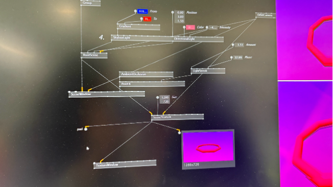

This week’s workshop focused on VVVV Gamma, a visual programming environment that guided us through node-based and visual coding methods to explore the possibilities of procedural real-time graphics. As a tool-oriented practice in generative creativity, this course not only broadened my understanding of graphic programming but also laid the foundation for applying procedural logic and data-driven visualization in my future creations.
The core of VVVV Gamma lies in nodal logic, which allows us to build program flows through “connections” rather than “syntax”. This approach made me realize that creation is no longer limited by the threshold of text-based programming, but becomes a process of structured graphic thinking.
During the operation, we learned:
- How to establish time loops and numerical flows;
- How to transform mathematical functions into visual parameters;
- How to organize the structure of visual systems in a modular way.
This kind of thinking training is not only applicable to VVVV, but also gives me a sense of methodological versatility when using environments such as TouchDesigner, Unreal, and Processing.

In the practical session, we attempted to use VVVV to generate real-time 3D graphics, including:
- Procedurally generated geometry (such as rotating spheres and motion curves);
- Particle system simulations (like fluids, trajectories, and gravitational fields).
These exercises made me realize that real-time graphics aren’t just “rendered results,” but a continuously evolving “generative process”—where visuals are external expressions of data states.
Another particularly inspiring point was how the instructor explained that particle systems aren’t just an aesthetic tool, but a “data representation language”. Through the position, velocity, and lifecycle of particle swarms, we can visualize real-time sensor data, motion trajectories, or network states.
This made me realize that generative image systems aren’t limited to art they also have powerful information-expression and interactive potential, especially suitable for tech art, interactive installations, or future data theater designs.
What I have learned:
- Learned how to build nodal visual logic in graphic creation.
- Understood how to use VVVV for real-time 3D graphics and particle simulations.
- Comprehended that “real-time graphics” can serve not only as special effects but also as a data visual language.
- Enhanced cross-platform generative creative thinking, applicable to tools like TouchDesigner and Unreal.